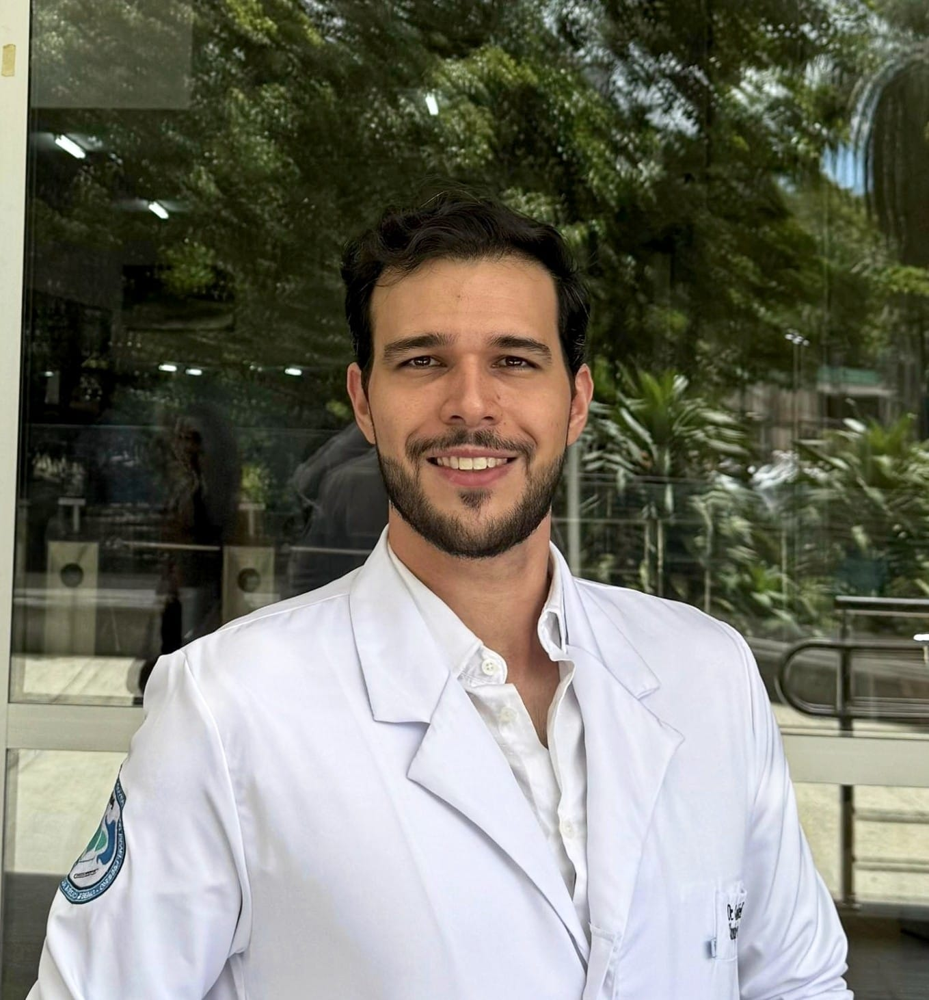
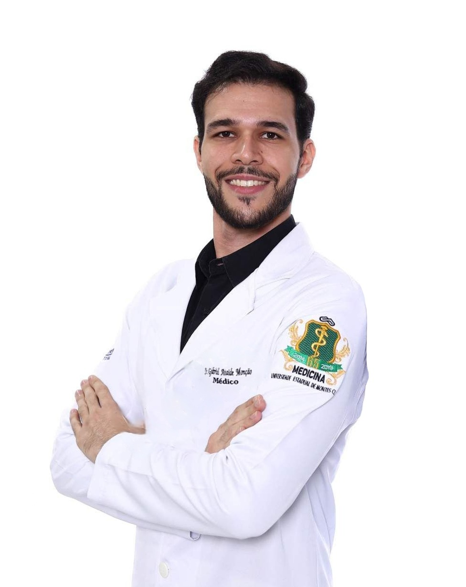

2 titulações RQE
Geral + Ap. Digestivo
Recebeu a indicação de uma cirurgia ou um exame encontrou algo? O primeiro passo é entender com calma o que está acontecendo. Avalio cada caso, explico cada etapa e busco a via minimamente invasiva, com segurança e cuidado.


Cirurgião geral e do aparelho digestivo, dedicado à cirurgia minimamente invasiva. O que os pacientes mais destacam é a segurança que ele transmite e a clareza com que explica cada passo.
Você entende o seu caso e decide com segurança, sem pressa e sem alarmismo.
Cirurgia videolaparoscópica: pequenas incisões, precisão e recuperação mais rápida.
Explico cada etapa com clareza e no seu tempo, do diagnóstico ao pós-operatório.
Quando há indicação cirúrgica, priorizo a técnica videolaparoscópica. Cada caso é avaliado individualmente.
Retirada da vesícula (colecistectomia) por videolaparoscopia, com pequenas incisões e retorno mais rápido à rotina.
Correção de hérnias da parede abdominal e inguinais pela via minimamente invasiva, com técnica atual.
Avaliação e tratamento cirúrgico do refluxo gastroesofágico quando indicado, discutindo as alternativas.
Apendicectomia videolaparoscópica, conduta segura para o quadro agudo.
Nódulos, cistos e alterações do aparelho digestivo encontrados em exames: avalio e oriento a melhor conduta.
Acompanhamento cuidadoso do aparelho digestivo, com foco em conduta, seguimento e cuidado a cada etapa.
A via videolaparoscópica é o caminho que busco sempre que é seguro para o seu caso.
Entendemos juntos o seu caso, os exames e as opções, sem pressa.
Quando indicada, a cirurgia videolaparoscópica: pequenas incisões, câmera e precisão.
Menos dor e cicatrizes menores tendem a favorecer um retorno mais rápido à rotina.
As informações desta página têm caráter educativo e não substituem uma consulta. Condutas e resultados variam conforme cada caso.
É a técnica realizada por pequenas incisões, com o auxílio de uma câmera (videolaparoscopia), em vez de um corte grande. Tende a significar menos dor, cicatrizes menores e recuperação mais rápida, sempre que for segura para o seu caso.
Sim. Entender o diagnóstico e as opções com calma é parte do cuidado. Na avaliação, explico o seu caso e as alternativas para que você decida com segurança.
O agendamento é feito pelo WhatsApp (38) 99172-1201. Você pode enviar uma mensagem contando um pouco do seu caso, sem urgência.
Cirurgia geral e cirurgia do aparelho digestivo, com dupla titulação (RQE 62392 e RQE 70182), com foco na abordagem minimamente invasiva.
O agendamento é feito pelo WhatsApp. Se preferir, deixe uma mensagem e nossa equipe retorna o contato.